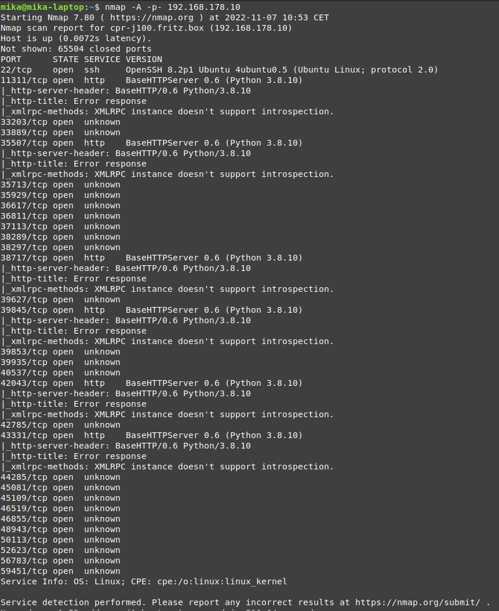

Tactic: Intel Gathering
Technique: Service Scanning
Like PCs and servers, autonomous robots often have services that have bound themselves to network ports, listening
to and receiving incoming messages. These network ports can be scanned to detect the services that run on them,
potentially gathering information about their versions as well. This information is essential during exploitation,
since these services are strong points of entry for initial access and privilege escalation.
Just detecting the service that runs on these network ports is often not enough. Detecting the versions of these
services is often useful information, given that these versions can be cross referenced with CVE database to check
if there are any exploitable vulnerabilities that run on them.
Technique in practice
Video: Nmap tutorial
Website: Nmap software
Mitigations
The services should only give out essential information, as to not give attackers too much data during their recon
phase. The services that are approachable from the outside should also be limited, so that no unnecessary,
potentially exploitable services run on the robot. Lastly, the services should be regularly updated to patch old
vulnerabilities in the services themselves.
Detections
An IDS can be setup to detect port scanning.
Documented incidents with autonomous robots
During a pentest performed on a Jackal robot from Clear Path Robotics, the services that ran on it and were mapped
to network ports were scanned with Nmap. Through this scan, SSH was discovered. This information was later used to
get initial access through default credentials.

Documented incidents in other domains
[2022] UK NCSC govt
agency is scanning the Internet for flawed devices in the UK